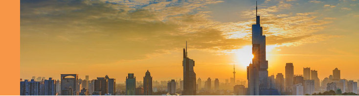

紫峰大厦
Zi Feng Tower
鼓楼区中山北路
1号
六朝古都南京的核心鼓楼广场，崛起的450米地标建筑绿地广场·紫峰大厦，则是由世界摩天大楼设计泰斗——美国SOM建筑事务所首席设计师Adrian D。史密斯亲自担纲，在历史积淀深厚的南京，身为美国人的史密斯同样开始回归元文化，在查阅了大量南京的史料，深刻解读城市文化之后，史密斯设计师在建筑中融入了中国古老的蟠龙文化，蜿蜒流淌的扬子江以及花园城市的意象，独特的单元结构三角玻璃幕墙如龙鳞沿建筑盘旋而上，阳光下巨龙奋起，辉映南京的城市气质。
